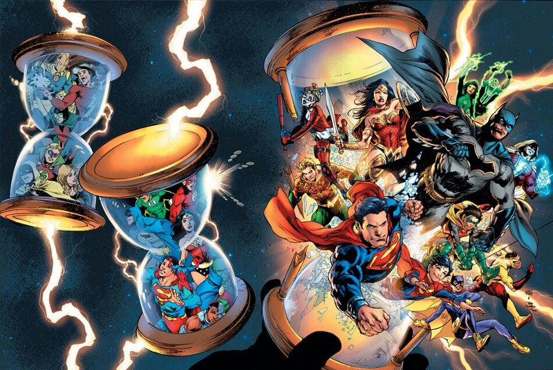
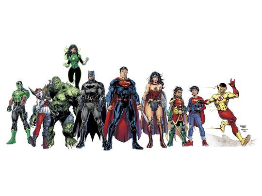

DC is all-set to shake up their universe with Rebirth, and everyone’s got an opinion about it. With early reviews, leaked spoilers, and its official release now upon us, there isn’t a whole lot left to the imagination.
At this point, word’s out on the big reveals and the overall quality. So let’s not even go there. Forget about it. Instead, let’s discuss why you should care about yet another comic event, and what makes DC’s third line-wide overhaul in 5 years so damn special.
Let me be super transparent. I am 100% pro-Rebirth. On paper, I think it’s a great concept. A return to form for a floundering universe with Geoff Johns at the helm? What the hell is there not to like? Fanboyish optimism and subjective tastes aside, I also understand that as fans we’re living in an age where comic publishers churn one empty, short-sighted, and disposable mega-event crossover after another, which makes trepidation a very fair gut reaction.
See more often than not, event comics do little in the way of long-term progression. It’s less about growth and change, and more so focused on stunt-y character deaths, status shakeups, and revelations. A static cycle of shock, awe, rinse, reset, repeat, reboot. While this is a definite reality, it’s still just one route. Like anything else, there are exceptions, and it’s because of these exceptions that I am excited for Rebirth. So let’s just get to it.
Outside of quality and the potential updates to continuity, I’m most excited for Rebirth because it coneys one simple and clear message — DC wants to do better. After 2011’s New 52 overhaul, and last year’s DCYou, it’s clear that the publisher isn’t quite as confident in the direction of their universe as they have been in the past. Sure, that might sound disconcerting, but I honestly think it’s great that a major publisher is feeling the pressure from the fans. Think about it.
It’s clear DC understands this, if only to a limited degree. That’s why they’re working so hard to win us over. Yes, they have business objectives, marketing goals, and financial stake in their universe, but that doesn’t discredit the simple fact that they’re willing to change based on how fans react and feel about their product. To put it simply, DC gets it, and they want to show you they get it. They want you on their side.
They tried with The New 52, and sure that line had its merit, but murky, pick-and-choose continuity and a lack of history and creativity ultimately unraveled that line. Not to mention the darkness. Yes, comics reflect society, and society is a black hole of bitter, ceaseless nothingness, but come on. In what world do we need a dark interpretation of DC’s more colorful roster of characters? I digress. The point I’m trying to make is simple. DC understood the shortcomings of the New 52 line, and sought to course correct with last year’s DCYOU initiative. With Convergence kicking the initiative off, the publisher looked to remove the rigid parameters of decade-spanning continuity.
So just as the New 52 sought to condense history, DCYOU looked to blow it back out, making it a optional amenity for those who wanted. It sounds basic enough, right? Comics can focus on telling better stories that don’t rely on what’s come before. Titles are more accessible for new readers. Win-win. Not quite.Dial back the reliance/importance of continuity in serialized comics? I salute your boldness, DC. Still, muddled timelines and mischaracterization left fans feeling blasé and showed the publisher little improvement over the past year. Don’t get me wrong. There have been dozens of quality titles on the stands, but the fact of the matter remains — the DCYOU still lacked that which made the DC Universe so special in the past — history, hope, and optimism.
If the above words read familiar, it’s because Johns has been no stranger to them. He’s taken these phrases and sprinkled them all over the press junkets for Rebirth. While some may deem that as pandering, I would take it as validation.
The man understands what makes the DCU such a special place. Furthermore, he understands elements like legacy, change, and hope have been in very limited supply over the last half decade. It’s this very understanding that gives Rebirth is authentic glow, it’s feeling of actual revival.
For me, the buzz around the book isn’t just event hype. Every event has hype, but Rebirth feels different in that it’s more validation. It’s DC saying, ‘Hey, we tried some stuff, but it’s not really working. We’d like to try again.’ Take a minute and soak that in. A major, multi-million dollar company is admitting they’re wrong. And even better, they’re trying to win you back. That is HUGE.
YES, there are marketing objectives.
YES, there are financial motivations.
YES, both of these factors can compromise quality very quickly.
But you have to understand, DC is a publisher, and at the end of the day, selling books is always going to be their goal. Get over it. It’s not important. What is important is their approach.
Surely this all sounds like typical, hyperbolic fanboy hysteria, but hey, we’re talking classic DC comics, and that gets me going. But hey, don’t take my word for it. There is so much information around Rebirth already available. The book itself is now available, so go and make up your mind for yourself.
YES — Rebirth is the company’s third overhaul in five years, but that shouldn’t discourage you. Yes, there’s event fatigue and all that, but hey, it’s going to happen either way. Best to just enjoy it, and note the positives—namely the focus on character and the scope of the story. Also, rejoice, for a publisher is finally ready and willing to listen to its fandom.
DC is not afraid to take risks, but more importantly they’re not afraid to admit fault and course correct when those risks don’t work. That itself is a huge win for readers. Experimentation in mainstream comics is a rare thing, so just enjoy the damn ride. Also, Rebirth is like 81 pages for $2.99. Splurge a little and just give it a damn chance.